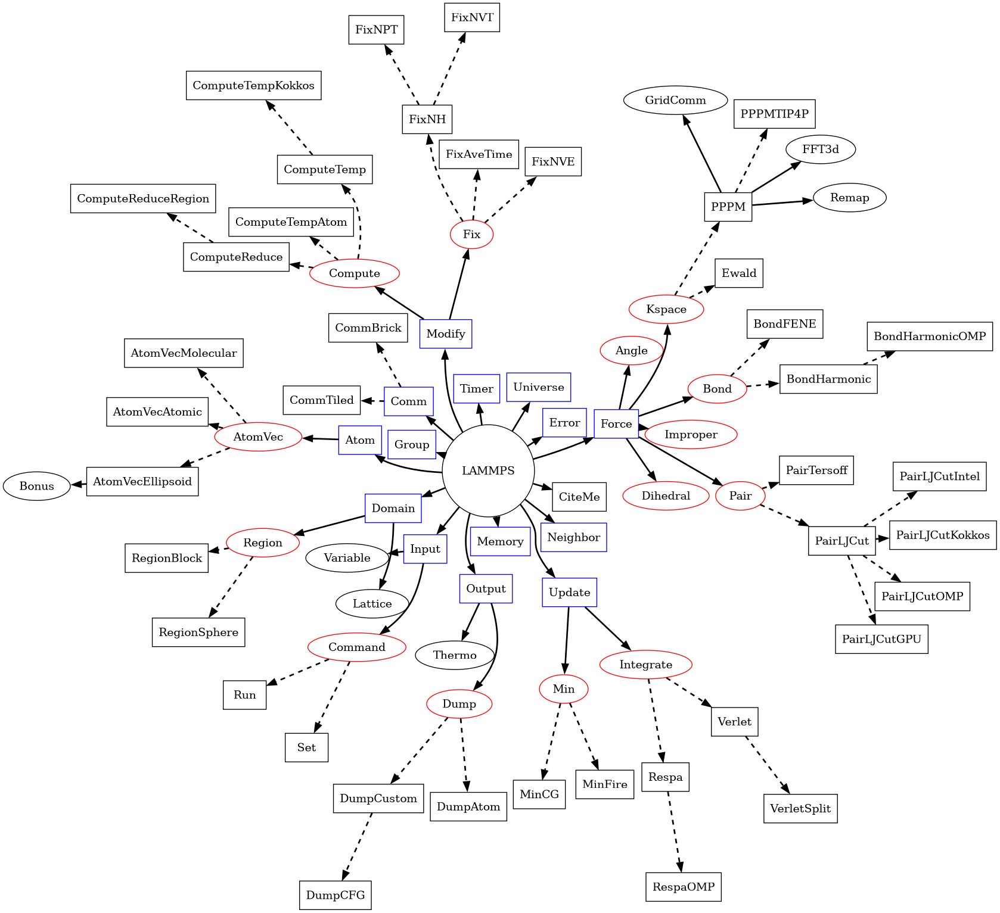

\(\renewcommand{\AA}{\text{Å}}\)
4.1. Source files
The source files of the LAMMPS code are found in two directories of the
distribution: src and lib. Most of the code is written in C++
but there are small a number of files in several other languages like C,
Fortran, Shell script, or Python.
The core of the code is located in the src folder and its
subdirectories. A sizable number of these files are in the src
directory itself, but there are plenty of packages,
which can be included or excluded when LAMMPS is built. See the
Include packages in build section of the manual
for more information about that part of the build process. LAMMPS
currently supports building with conventional makefiles and through CMake. Those procedures
differ in how packages are enabled or disabled for inclusion into a
LAMMPS binary, so they cannot be mixed. The source files for each
package are in all-uppercase subdirectories of the src folder, for
example src/MOLECULE or src/EXTRA-MOLECULE. The src/STUBS
subdirectory is not a package but contains a dummy MPI library, that is
used when building a serial version of the code. The src/MAKE
directory and its subdirectories contain makefiles with settings and
flags for a variety of configuration and machines for the build process
with traditional makefiles.
The lib directory contains the source code for several supporting
libraries or files with configuration settings to use globally installed
libraries, that are required by some optional packages. They may
include python scripts that can transparently download additional source
code on request. Each subdirectory, like lib/colvars or lib/gpu,
contains the source files, some of which are in different languages such
as Fortran or CUDA. These libraries included in the LAMMPS build, if the
corresponding package is installed.
LAMMPS C++ source files almost always come in pairs, such as
src/run.cpp (implementation file) and src/run.h (header file).
Each pair of files defines a C++ class, for example the
LAMMPS_NS::Run class, which contains the code invoked by
the run command in a LAMMPS input script. As this example
illustrates, source file and class names often have a one-to-one
correspondence with a command used in a LAMMPS input script. Some
source files and classes do not have a corresponding input script
command, for example src/force.cpp and the LAMMPS_NS::Force
class. They are discussed in the next section.
The names of all source files are in lower case and may use the
underscore character ‘_’ to separate words. Apart from bundled,
externally maintained libraries, which may have different conventions,
all C and C++ header files have a .h extension, all C++ files have a
.cpp extension, and C files a .c extension. A few C++ classes
and utility functions are implemented with only a .h file. Examples
are the Pointers and Commands classes or the MathVec functions.
4.2. Class topology
Though LAMMPS has a lot of source files and classes, its class topology
is not very deep, which can be seen from the LAMMPS class topology
figure. In that figure, each name refers to a class and has a pair of
associated source files in the src folder, for example the class
LAMMPS_NS::Memory corresponds to the files memory.cpp
and memory.h, or the class LAMMPS_NS::AtomVec
corresponds to the files atom_vec.cpp and atom_vec.h. Full
lines in the figure represent compositing: that is, the class at the
base of the arrow holds a pointer to an instance of the class at the
tip. Dashed lines instead represent inheritance: the class at the tip
of the arrow is derived from the class at the base. Classes with a red
boundary are not instantiated directly, but they represent the base
classes for “styles”. Those “styles” make up the bulk of the LAMMPS
code and only a few representative examples are included in the figure,
so it remains readable.

LAMMPS class topology
This figure shows relations of base classes of the LAMMPS simulation package. Full lines indicate that a class holds an instance of the class it is pointing to; dashed lines point to derived classes that are given as examples of what classes may be instantiated during a LAMMPS run based on the input commands and accessed through the API define by their respective base classes. At the core is the
LAMMPSclass, which holds pointers to class instances with specific purposes. Those may hold instances of other classes, sometimes directly, or only temporarily, sometimes as derived classes or derived classes of derived classes, which may also hold instances of other classes.
The LAMMPS_NS::LAMMPS class is the topmost class and
represents what is generally referred to as an “instance of LAMMPS”. It
is a composite holding pointers to instances of other core classes
providing the core functionality of the MD engine in LAMMPS and through
them abstractions of the required operations. The constructor of the
LAMMPS class will instantiate those instances, process the command-line
flags, initialize MPI (if not already done) and set up file pointers for
input and output. The destructor will shut everything down and free all
associated memory. Thus code for the standalone LAMMPS executable in
main.cpp simply initializes MPI, instantiates a single instance of
LAMMPS while passing it the command-line flags and input script. It
deletes the LAMMPS instance after the method reading the input returns
and shuts down the MPI environment before it exits the executable.
The LAMMPS_NS::Pointers class is not shown in the
LAMMPS class topology figure for clarity. It holds references to many
of the members of the LAMMPS_NS::LAMMPS, so that all classes derived
from LAMMPS_NS::Pointers have direct access to those
references. From the class topology all classes with blue boundary are
referenced in the Pointers class and all classes in the second and third
columns, that are not listed as derived classes, are instead derived
from LAMMPS_NS::Pointers. To initialize the pointer
references in Pointers, a pointer to the LAMMPS class instance needs to
be passed to the constructor. All constructors for classes derived from
it, must do so and thus pass that pointer to the constructor for
LAMMPS_NS::Pointers. The default constructor for
LAMMPS_NS::Pointers is disabled to enforce this.
Since all storage is supposed to be encapsulated (there are a few exceptions), the LAMMPS class can also be instantiated multiple times by a calling code. Outside the aforementioned exceptions, those LAMMPS instances can be used alternately. As of the time of this writing (early 2023) LAMMPS is not yet sufficiently thread-safe for concurrent execution. When running in parallel with MPI, care has to be taken, that suitable copies of communicators are used to not create conflicts between different instances.
The LAMMPS class currently holds instances of 19 classes representing
the core functionality. There are a handful of virtual parent classes
in LAMMPS that define what LAMMPS calls styles. These are shaded
red in the LAMMPS class topology figure. Each of these are parents of a
number of child classes that implement the interface defined by the
parent class. There are two main categories of these styles: some
may only have one instance active at a time (e.g. atom, pair, bond,
angle, dihedral, improper, kspace, comm) and there is a dedicated
pointer variable for each of them in the corresponding composite class.
Setups that require a mix of different such styles have to use a
hybrid class instance that acts as a proxy, and manages and forwards
calls to the corresponding sub-style class instances for the designated
subset of atoms or data. The composite class may also have lists of
class instances, e.g. Modify handles lists of compute and fix
styles, while Output handles a list of dump class instances.
The exception to this scheme are the command style classes. These
implement specific commands that can be invoked before, after, or in
between runs. For these an instance of the class is created, its
command() method called and then, after completion, the class instance
deleted. Examples for this are the create_box, create_atoms, minimize,
run, set, or velocity command styles.
For all those styles, certain naming conventions are employed: for
the fix nve command the class is called FixNVE and the source files are
fix_nve.h and fix_nve.cpp. Similarly, for fix ave/time we have
FixAveTime and fix_ave_time.h and fix_ave_time.cpp. Style names
are lower case and without spaces or special characters. A suffix or
words are appended with a forward slash ‘/’ which denotes a variant of
the corresponding class without the suffix. To connect the style name
and the class name, LAMMPS uses macros like: AtomStyle(),
PairStyle(), BondStyle(), RegionStyle(), and so on in the
corresponding header file. During configuration or compilation, files
with the pattern style_<name>.h are created that consist of a list
of include statements including all headers of all styles of a given
type that are currently enabled (or “installed”).
More details on individual classes in the LAMMPS class topology are as follows:
The Memory class handles allocation of all large vectors and arrays.
The Error class prints all (terminal) error and warning messages.
The Universe class sets up one or more partitions of processors so that one or multiple simulations can be run, on the processors allocated for a run, e.g. by the mpirun command.
The Input class reads and processes input (strings and files), stores variables, and invokes commands.
Command style classes are derived from the Command class. They provide input script commands that perform one-time operations before/after/between simulations or which invoke a simulation. They are usually instantiated from within the Input class, its
commandmethod invoked, and then immediately destructed.The Finish class is instantiated to print statistics to the screen after a simulation is performed, by commands like run and minimize.
The Special class walks the bond topology of a molecular system to find first, second, third neighbors of each atom. It is invoked by several commands, like read_data, read_restart, or replicate.
The Atom class stores per-atom properties associated with atom styles. More precisely, they are allocated and managed by a class derived from the AtomVec class, and the Atom class simply stores pointers to them. The classes derived from AtomVec represent the different atom styles, and they are instantiated through the atom_style command.
The Update class holds instances of an integrator and a minimizer class. The Integrate class is a parent style for the Verlet and r-RESPA time integrators, as defined by the run_style command. The Min class is a parent style for various energy minimizers.
The Neighbor class builds and stores neighbor lists. The NeighList class stores a single list (for all atoms). A NeighRequest class instance is created by pair, fix, or compute styles when they need a particular kind of neighbor list and use the NeighRequest properties to select the neighbor list settings for the given request. There can be multiple instances of the NeighRequest class. The Neighbor class will try to optimize how the requests are processed. Depending on the NeighRequest properties, neighbor lists are constructed from scratch, aliased, or constructed by post-processing an existing list into sub-lists.
The Comm class performs inter-processor communication, typically of ghost atom information. This usually involves MPI message exchanges with 6 neighboring processors in the 3d logical grid of processors mapped to the simulation box. There are two communication styles, enabling different ways to perform the domain decomposition.
The Irregular class is used, when atoms may migrate to arbitrary processors.
The Domain class stores the simulation box geometry, as well as geometric Regions and any user definition of a Lattice. The latter are defined by the region and lattice commands in an input script.
The Force class computes various forces between atoms. The Pair parent class is for non-bonded or pairwise forces, which in LAMMPS also includes many-body forces such as the Tersoff 3-body potential if those are computed by walking pairwise neighbor lists. The Bond, Angle, Dihedral, Improper parent classes are styles for bonded interactions within a static molecular topology. The KSpace parent class is for computing long-range Coulombic interactions. One of its child classes, PPPM, uses the FFT3D and Remap classes to redistribute and communicate grid-based information across the parallel processors.
The Modify class stores lists of class instances derived from the Fix and Compute base classes.
The Group class manipulates groups that atoms are assigned to via the group command. It also has functions to compute various attributes of groups of atoms.
The Output class is used to generate 3 kinds of output from a LAMMPS simulation: thermodynamic information printed to the screen and log file, dump file snapshots, and restart files. These correspond to the Thermo, Dump, and WriteRestart classes respectively. The Dump class is a base class, with several derived classes implementing various dump style variants.
The Timer class logs timing information, output at the end of a run.